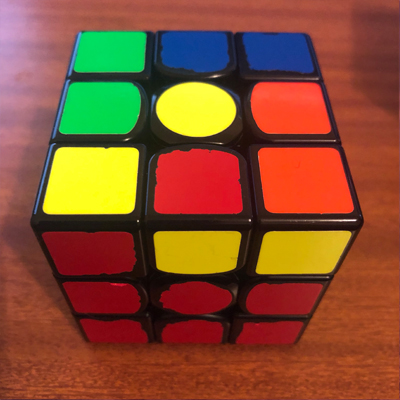

how to solve a rubik's cube
how the cube works
 this is a rubik's cube, a very famous and popular toy. also very frustrating, due to it's difficulty, as i'm sure you are aware.
this is a rubik's cube, a very famous and popular toy. also very frustrating, due to it's difficulty, as i'm sure you are aware.you see here how the cube is solved? you can do this too!


the cube has 8 corner pieces. they each have 3 stickers on them. corner pieces MUST stay in the corners, it is phsyically impossible for a corner piece to move to an edge or centre, and there is only 1 of each corner piece. remember, you are solving pieces, NOT stickers.


the cube has 12 edge pieces, each with 2 stickers on them. likewise with corners, edges cannot move from the edge, and there is only 1 of each edge piece. there are not 2 Green/Red edges, only 1.

lastly, the centres. the centres REPRESENT THE COLOUR OF THE FACE. if the centre sticker is blue, it is the blue face, regardless of the other stickers on that face. the centres are locked in place, and will never change position. you can't swap the blue and red centres, but you can rotate a group of 4 centres by turning a middle face.
types of moves

this is the R layer. it is the right face of the cube.
note, the orientation of the cube does not matter.. whichever side is on the right is the R face.

this is the U layer. it is the up face of the cube.

this is the L layer. it is the left face of the cube.

this is the D layer. it is the down face of the cube.

this is the F layer. it is the front face of the cube.

this is the B layer. it is the back face of the cube.
each of these faces can be manipulated in different ways. if you turn that face clockwise, you designate that letter by itself.
R U R U means you would turn the RIGHT face clockwise, the UP face clockwise, the RIGHT face clockwise again, and the UP face clockwise again.
if you turn the face counter-clockwise, you designate that letter with a ' symbol (known as a prime here)
R U R' U' means you turn the RIGHT face clockwise, the UP face clockwise, the RIGHT face counter-clockwise, and then the UP face counter-clockwise.
if you turn the face twice, or 180°, you assign a 2 to that letter.
R U' D2 U R' means you would turn the R face clockwise, the U face counter-clockwise, the DOWN face twice, the U face clockwise, and the R face counter-clockwise.
method
step 1
the first step is to make a cross. you may start on any colour you like, but for this tutorial we will be creating a WHITE cross.
the aim of this step is to solve all white edge pieces. in other words, to place each white edge into its correct position, and orientation.
to form the white cross, you first move all WHITE edges to the yellow layer, with the white sticker facing up
(remember, the centre sticker determines the colour of the face).

you then align each white edge to its corresponding centre. for example, the red sticker on the red/white edge should line up to
the red centre.

then, simply turn that face twice to solve that edge. repeat this for all white edges, and you should have a complete white cross!

once you have done this, hold the cube so that the cross is on the bottom of the cube.

step 2
the second step is to solve the entire first layer. we continue on the side we did the cross on, if you solved the white cross, you now are solving
the rest of the white pieces to solve the first layer.
first, look for any white corner piece in the top layer (any corner with white on it).

identify where that piece belongs. if its the Orange/White/Blue piece, it belongs in the corner that connect the Orange, White, and Blue layers.
next, position the cube so that the corner is on top of its correct position, and hold the cube with the white face down, and the corner you want to solve
on the right (as shown in picture).

perform the following algorithm.
R U R' U'.
repeat this algorithm as many times as needed until that piece is solved!

continue this process until there are no white corners in the up face... but you may not be done yet!
you may encounter a situation where you already have a white corner in the white layer, but it isnt in its correct position or orientation, as shown here.

to fix this, simply perfrom that same algorithm (R U R' U') once, to move that piece to the up layer, then solve it like you learned earlier.
if you have completed this step correctly, you will have solved the first layer!
step 3
the third step is to solve the entire second layer.
first, look for any edge pieces that do not have YELLOW on them (if you chose to start on a different colour, you look for any edges
that do not have the UP face colour on it... remember, hold the face you solved the cross on at the bottom.).

then, move that piece so that the sticker on the front of the piece (not the one on the yellow face) matches up with the centre for that colour.
this is a bit complicated, so please refer to the images and gifs provdided here to simplify this as much as possible.
identify where that piece has to go.
if it has to go to the right, you move the piece to the left, then, perform the following algorithm:
R U R' U', rotate the whole cube so that the corner is on the left now. then L' U' L U.

together, thats R U R' U' rotate L' U' L U.
the L algorithm here is identical to the first one you learned, except you are using your left hand now, instead of your right.
if the edge instead has to go the left, you move the piece to the right, then, perform the following algorithm:
L' U' L U, rotate the whole cube so that the corner is on the right now. then R U R' U'.

this is the same algorithm as before, just in the other order. L' U' L U rotate R U R' U'.
repeat this step until there are no non-yellow pieces in the top layer... but again, you might not be done yet!
you may have a situation where you have an edge in the right spot, just around the wrong way... or, in the right layer, but in the wrong position.
to fix this, move any other edge in the top layer into that piece, the same you would normally, in order to move the edge to the top.

then, you can solve that edge as learned.
if done correctly, you will have solved the 2nd layer!!
step 4
the fourth step is to begin solving a cross on the yellow side (or up face). here, we will orient all of the yellow edges, or in other words,
get yellow facing up on each of the edge pieces. remember, the corners do not matter in this step.
there are 4 possible cases you can get, but you only need 1 algorithm to be able to do all them.
here is the algorithm:
F R U R' U' F'.

this is very similar to the first algorithm you learned, but, you add an F move at the start, and an F' move at the end
here are the 4 possible cases:
this here is a line case. hold the cube as shown in the picture (with the line going across horizontally), then hold the cube with white facing down, and perform
the algorithm.

this is the L case. hold the cube as shown in the picture (with the L shape at the back+left of the cube), then hold the cube with white facing down, and perform
the algorithm. you will end up with the line case.
this here is a dot case. doesnt matter how you hold the cube, as long as white is facing down. perform the algorithm. you will end up with the L case

the 4th case you get is the solved case, which mean you can move on. this is what it looks like:
once you have done this, you may move onto the next step!
step 5
the fifth step is a continuation from step 4. in step 4 we oriented all of the yellow edges, now we will position them correctly, so that edge edge lines up with
its' correct centre.
the first part of this step is to find 2 edges that line correctly, it will like similar to this:

turn the top layer until you get this. if you don't get it after 4 rotations, thats ok too, it just means this step will take a little longer.
hold the 2 solved edges at the back and right, and white on the bottom, as shown, and perform the following algorithm:
R U R' U R U2 R'.you may need to adjust the top layer after this to get the edges to line up

this may take a little practice to get right, but follow the video above and you will pick it up in no time!
one you have done this algorithm, check if you get all 4 yellow edges solved. if you do not, simply redo this step.
if you had the other 2 edges solved, where they are opposite each other instead of next to each other, like this:
just perform the algorithm anyway, and you will end up with 2 edges correct. you can then start this step again and you should have a completed yellow cross!.

step 6
the sixth step is now positioning the corners in the last layer. we have solved the edges, just the corner left.
check each corner to see if it is in the right position. you will know its right if the colours on the piece match up with the 3 colours around it.
it will look like this:
you can either have 0 correctly positioned corners, 1, or 4. if its 4 you can skip this step.
if you have 1 corner in the right spot, hold the cube so that it is on the front/right, and with white on the bottom, like this:
perform the following algorithm:
U R U' L' U R' U' L. this may take a while to learn, but youll get there! i believe in you.
you may need to repeat this a number of times before each corner is correctly positioned.
if you had 0 corners in the correct spot, like this:
simply perform the algorithm anyway, and continue from there.
you are so close now!
step 7
the seventh and final step will flip the last corners and solve the cube.
we have had white on the bottom for most of the solve, but here we flip it, so yellow is now on the bottom, like this:
all you need is one algorithm, the one you learned at the start of the solve (R U R' U'), but you have to be careful...
hold the cube so that an unsolved corner is on the bottom right, here:
peform the algorithm until it is correctly placed, but ignore the other layers. you only care about that one piece.
once it is in the right spot, turn ONLY the bottom (or D) layer until another unsolved piece is in that spot. then repeat that earlier step.
remember, you have to turn ONLY the bottom layer. if you rotate the whole cube, this will not work.
once the remaining pieces have been correctly solved, you should have a completely solved rubik's cube. if you did this right, then congratulations, you earned it
How to cube
Pics and txt